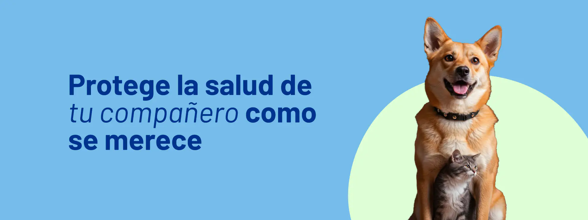
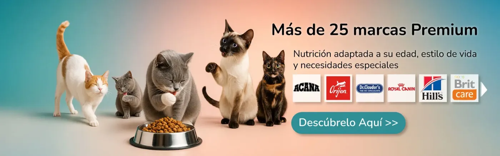
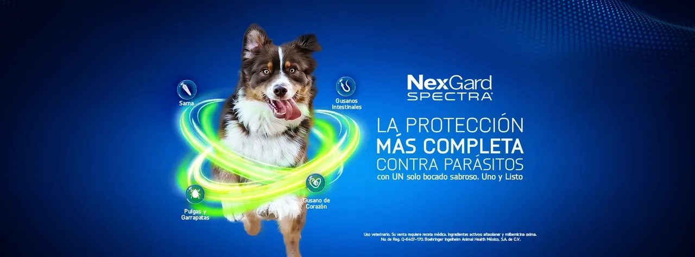

Nosotros
En San Antón, día cada para brindar una atención veterinaria cercana, profesional y comprometida con el bienestar de cada animal. Nuestra misión es ofrecer servicios de salud confiables, basados en el respeto, el cuidado responsable y el amor por las mascotas que forman parte de tu familia. Creemos en la empatía, la dedicación y la transparencia como valores fundamentales. Por eso, acompañamos a cada paciente con vocación, tecnología adecuada y un equipo preparado para garantizar diagnósticos precisos y tratamientos seguros. En San Antón, tu mascota es nuestra prioridad.
Servicios Destacados
- Consultas
- Vacunación
- Emergencia